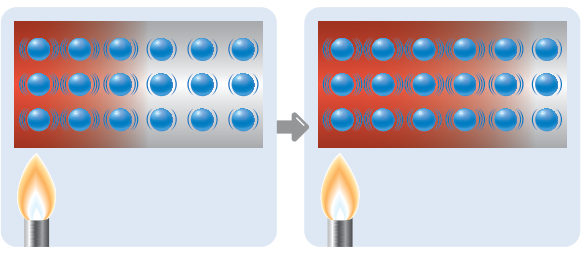
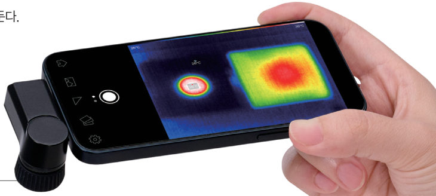
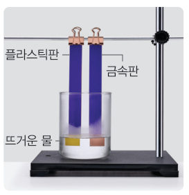
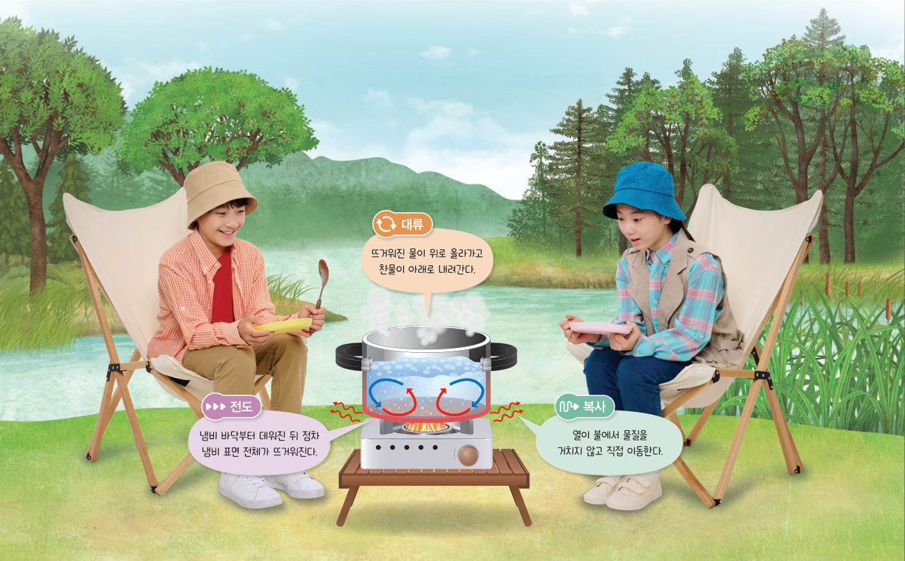
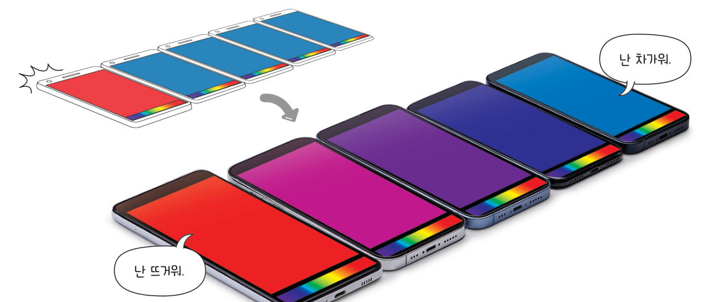
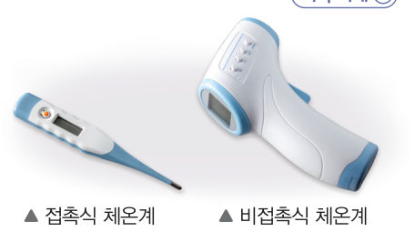

“멀리 떨어져 있는데도 뜨겁네.” 모닥불의 열기는 어떻게 멀리까지 전달되는 것일까? 가상 열화상 카메라로 금속판과 플라스틱판을 비교하고, 3D 냄비 속에서 전도·대류·복사를 직접 찾아보자.
🎯 이 단원을 배우면 — 열이 전도, 대류, 복사로 전달됨을 설명하고, 열이 이동하는 방식을 모형 등을 사용하여 다양하게 표현할 수 있다.
교과서열은 어떤 방식으로 이동할까? — 전도 90쪽

그림 3-4열의 전도
금속 막대의 한쪽 끝을 가열하면 그림 3-4와 같이 가열한 부분의 입자가 더 활발하게 움직이고, 이 입자의 움직임이 이웃한 입자에 차례로 전달되면서 다른 쪽 끝까지 뜨거워진다. 이와 같이 물체를 구성하는 입자의 움직임이 이웃한 입자에 차례로 전달되어 열이 이동하는 방식을 전도라고 한다.
다음 탐구로 서로 다른 물체에서 열이 전도되는 정도를 비교해 보자.
▼ 입자 사슬 모형 — 왼쪽 끝을 가열하면 입자의 움직임이 이웃 입자로 차례로 전달돼요. 가열 버튼을 눌러 보세요.
1전도가 일어날 때 입자는 .
탐구열화상 카메라를 이용하여 물체에서 열의 전도 비교하기 90~91쪽
90쪽검은색 종이를 붙인 금속판과 플라스틱판91쪽뜨거운 금속 추 위의 두 판을 열화상 카메라로 촬영

●열화상 카메라물체의 온도를 색깔로 나타내어 보여 주는 장치
어떻게 할까
양면 접착테이프를 이용하여 플라스틱판과 금속판의 한쪽 면에 각각 검은색 종이를 붙인다.
금속 추 2개를 뜨거운 물을 담은 비커에 넣고 시간이 지난 뒤에 뜨거운 물에서 금속 추 2개를 집게로 꺼낸다. (금속 추가 뜨거운 물과 열평형에 이를 수 있도록 충분한 시간 동안 넣어 둔다.)
디지털 탐구 도구 활용 플라스틱판과 금속판을 뜨거운 금속 추 위에 각각 올려놓고, 열화상 카메라로 두 판의 온도 변화를 동영상으로 촬영한다.
⚠️ 뜨거운 물과 금속 추를 사용할 때 화상을 입지 않도록 주의한다.
가상 실험가상 열화상 카메라
두 판의 물질과 금속 추의 온도를 정하고 [판 올려놓기]를 누르면 열화상 카메라 화면이 녹화돼요. 판 가운데 흰 원이 금속 추가 닿는 자리예요. 화면 아래 색 막대가 온도를 나타내요.
● REC 열화상 카메라0초
왼쪽 판 평균 온도-
오른쪽 판 평균 온도-
왼쪽 판 모서리 온도-
오른쪽 판 모서리 온도-
정리해 볼까
1시간이 지날 때 온도가 판 전체로 빠르게 퍼지는 것은 이다.
2플라스틱판과 금속판의 온도가 변한 까닭을 열의 이동과 관련지어 설명해 보자.
3가상 실험으로 열이 전도되는 정도를 비교하여, 빠른 것부터 순서대로 나열해 보자. (끌어서 옮기기)
플라스틱
스테인리스
나무
구리
유리
알루미늄
4냄비의 바닥은 으로, 손잡이는 으로 만든다.
다르게 해 보기열변색 붙임 딱지로 열의 전도 비교하기 91쪽

① 열변색 붙임 딱지를 붙인 플라스틱판과 금속판을 스탠드에 고정한다. ② 뜨거운 물에 두 판을 끝부분만 닿도록 넣고, 열변색 붙임 딱지의 색 변화를 관찰한다. 🎨 가상 딱지는 약 35 ℃가 넘으면 보라색에서 분홍색으로 변해요.
위의 가상 실험에서 고른 두 물질이 그대로 쓰여요.
1같은 시간 동안 딱지의 색이 더 높이까지 변한 판은 이므로, 물체의 종류에 따라 열이 전도되는 정도가 .
교과서대류와 복사 92쪽
열이 전도되는 정도는 물체를 이루는 물질의 종류에 따라 다르다. 구리, 스테인리스와 같은 금속은 열을 빠르게 전달한다. 또 나무, 플라스틱 등은 열을 느리게 전달한다. 따라서 냄비와 같은 조리 도구의 바닥 부분은 음식이 잘 익을 수 있도록 금속으로 만든다. 또 냄비의 손잡이는 안전하게 잡을 수 있도록 나무, 플라스틱 등으로 만든다.
물이 든 냄비의 아래쪽을 가열하면 그림 3-5와 같이 뜨거워진 물이 위로 올라가고 찬물이 위에서 아래로 내려오면서 물의 온도가 전체적으로 높아진다. 이와 같이 액체나 기체 물질을 구성하는 입자가 직접 이동하면서 열이 이동하는 방식을 대류라고 한다.
햇빛이 비치는 곳에 있거나 난로 가까이에 있으면 따뜻함을 느낄 수 있다. 이는 전도나 대류와 달리 태양과 난로에서 열이 직접 이동하여 전달되기 때문이다. 이와 같이 열이 물질을 거치지 않고 직접 이동하는 방식을 복사라고 한다.

그림 3-5다양한 열의 이동 방식
오개념 바로잡기 · 뜨거운 물체에서만 복사가 일어날까? 일반적으로 모든 물체는 온도의 높고 낮음과 관계없이 복사의 형태로 열을 방출한다. 사람의 몸에서도 복사의 형태로 열을 방출하기 때문에 열화상 카메라로 촬영하면 체온 분포를 알 수 있다.
3D 움직이는 교과서그림 3-5를 3D로 — 냄비 속 세 가지 열 이동
불꽃 세기를 조절하고, 버튼으로 보고 싶은 열 이동 방식을 켜 보세요. 드래그하면 돌아가고 휠로 확대돼요. 대류를 켜면 물 입자가 직접 돌며 이동하고, 복사를 켜면 불에서 손으로 열이 곧바로 날아가요.
모두 보기
냄비 바닥-
물 위쪽-
물 아래쪽-
불을 켜면 냄비 바닥부터 데워져요.
13D 냄비에서 찾아보자. (가) 냄비 바닥부터 데워진 뒤 냄비 표면 전체가 뜨거워진다 → (나) 뜨거워진 물이 위로 올라가고 찬물이 아래로 내려간다 → (다) 냄비 옆에 댄 손이 불 쪽에서 따뜻함을 느낀다 →
해 보기열 이동 방식 표현하기 93쪽
열은 전도, 대류, 복사의 방식으로 이동한다. 다음 활동으로 열이 이동하는 방식을 다양하게 표현해 보자.

93쪽스마트폰 화면 색으로 열의 이동을 표현한 예 — “난 뜨거워.” “난 차가워.”
어떻게 할까
모둠별로 주변의 물건이나 몸을 이용해 열이 이동하는 방식인 전도, 대류, 복사를 표현하는 방법을 각각 토의한다.
토의한 내용을 바탕으로 열 이동 방식 중 한 가지를 정해 발표한다.
다른 모둠이 표현한 열 이동 방식이 어떤 것일지 구별하여 말한다.
💡 활동 도우미: 온도의 높고 낮은 정도를 어떻게 표현할지, 비유가 알맞은지, 표현이 창의적인지 등을 주로 이야기한다.
1위 그림의 스마트폰 표현은 를 나타낸 것이다.
2교실 앞에서 뒤로 공(열)을 보내는 방법을 열 이동 방식에 비유하였다. (1) 앞사람이 뒤쪽 친구에게 공을 바로 던져 준다 → (2) 자리에 앉은 친구들이 옆 사람에게 차례로 공을 건넨다 → (3) 공을 든 친구가 직접 걸어가서 뒤쪽에 전해 준다 →
3🧑🤝🧑 우리 모둠이 정한 열 이동 방식과 표현 방법을 쓰고, 전도·대류·복사의 특징과 관련하여 잘된 점과 보완할 점을 써 보자.
스스로 확인하기90쪽 학습 목표를 달성했는지 확인해 보자 93쪽
1개념 확인 열이 물질을 거치지 않고 직접 이동하는 방식을 ( )라고 한다.
2사고력 접촉식 체온계와 비접촉식 체온계가 체온을 측정하는 방법의 차이를 열 이동 방식과 관련지어 설명해 보자.

5분 테스트어떤 열 이동 방식일까?
1고체에서 물체를 이루는 물질의 종류에 따라 열이 가 다르다.
2전도에 의한 현상은 ‘전’, 대류는 ‘대’, 복사는 ‘복’을 골라 보자.
⑤ 주전자에 든 물을 끓일 때 아래쪽만 가열해도 물이 골고루 데워진다.
⑥ 추운 날 실외의 금속으로 된 의자는 나무로 된 의자보다 더 차갑게 느껴진다.
⑦ 적외선 카메라로 물체나 사람을 촬영하면 온도 분포를 알 수 있다.
⑧ 뜨거워진 물은 위로 올라가고, 찬물은 아래로 내려간다.
⑨ 토스터나 오븐으로 요리를 한다.
스스로 정리하기열 이동 방식 · 첫 번째 블록 찾기 94쪽
3열 이동 방식
이동 방식
뜻
물체를 구성하는 입자의 움직임이 이웃한 입자에 차례로 전달되어 열이 이동하는 방식
액체나 기체 물질을 구성하는 입자가 직접 이동하면서 열이 이동하는 방식
열이 물질을 거치지 않고 직접 이동하는 방식
첫 번째 블록 찾기
물이 든 조리 도구를 가열할 때 열은 어떻게 이동할까?
힌트 블록 — 88쪽: 뜨거운 주전자에 찬물을 담으면 주전자에서 물로 열이 이동하여 물의 온도가 높아진다. / 93쪽: 주전자를 가열하면 열이 전도되어 주전자 표면 전체가 뜨거워지고, 주전자의 열이 물로 전달되면 물이 대류하여 물 전체가 뜨거워진다.
제출학생 정보 · 제출하기
모든 활동을 마친 뒤 제출하면 전체가 한 번에 채점되고 피드백이 나타나요. 답안은 선생님 스프레드시트(중1 탭)에 기록돼요.